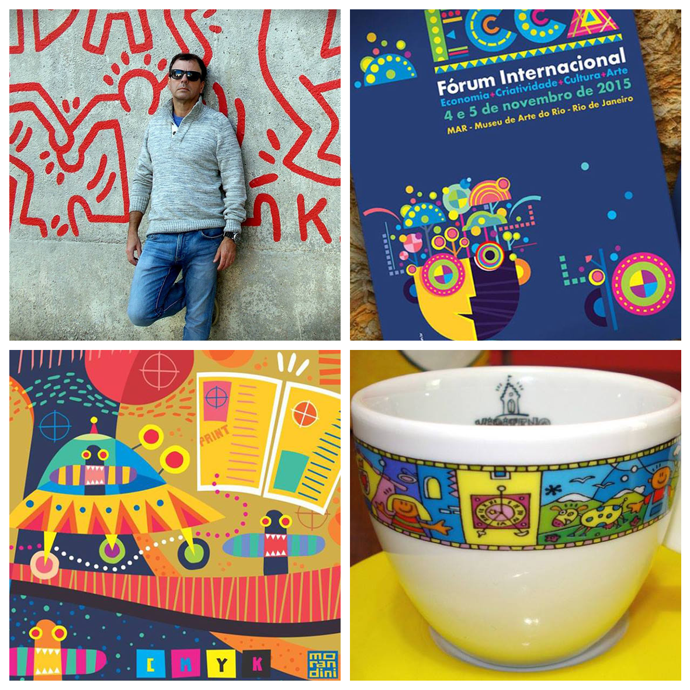

SAMBA - Semana de Produção Multimídia
☰MORANDINI

TEMA
"Entendeu ou quer que eu design?"
Um bate-papo livre, leve e solto sobre carreira, mercado, curiosidades e dicas, onde os participantes poderão interagir quando quiserem, fazendo comentários, tirando dúvidas ou matando alguma curiosidade sobre design, ilustração e arte.
MORANDINI: Para Morandini, não importa se é design, arte ou ainda uma terceira possibilidade, sem definição. O que vale mesmo é fazer a diferença na vida das pessoas. Tocar, emocionar e fazer sorrir. O essencial é contribuir com a sociedade, devolvendo a ela um pouco daquilo que recebemos. O valor do nosso trabalho está em seu legado. No que ele pode oferecer de bom para o mundo. Para mim, isso é o que verdadeiramente importa.
Formado em Comunicação Social, também estudou design gráfico, arte e ilustração. Em 1985, abriu seu estúdio, onde cria logotipos, ilustrações, e programas de identidade visual para que empresas, produtos, serviços e pessoas ganhem destaque nesse mundo cada vez mais repleto de imagens. Seus trabalhos têm sido usados em embalagens, publicidade, eventos, peças gráficas, arquitetura e ambientes digitais, produzidos para clientes de diversos portes e segmentos. Designer, ilustrador ou artista gráfico?
Talvez apenas um criador de imagens que busca fazer do mundo um lugar mais divertido e feliz.